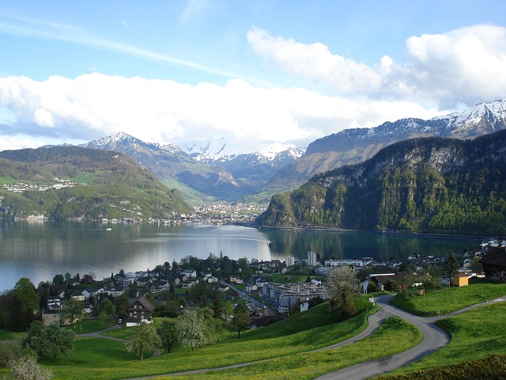
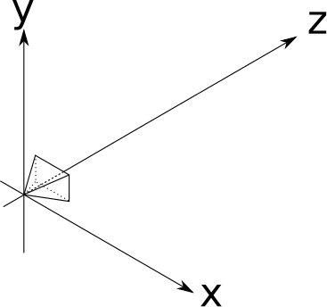
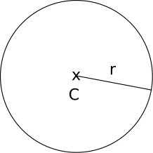
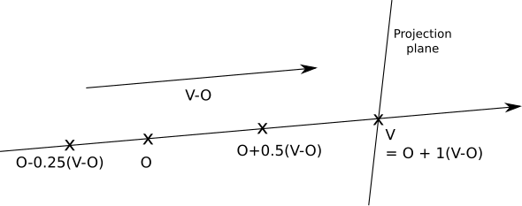
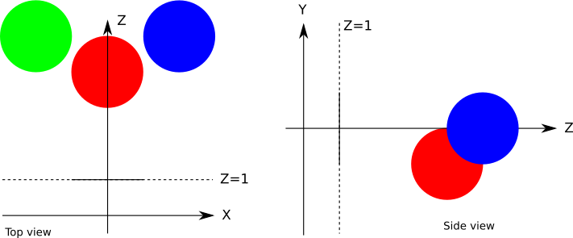

Basic Raytracing
In this chapter, we’ll introduce raytracing, the first major algorithm we’ll cover. We start by motivating the algorithm and laying out some basic pseudocode. Then we look at how to represent rays of light and objects in a scene. Finally, we derive a way to compute which rays of light make up the visible image of each of the objects in our scene and see how we can represent them on the canvas.
Rendering a Swiss Landscape
Suppose you’re visiting some exotic place and come across a stunning landscape—so stunning, you just need to make a painting capturing its beauty. Figure 2-1 shows one such landscape.

You have a canvas and a paint brush, but you absolutely lack artistic talent. Is all hope lost?
Not necessarily. You may not have artistic talent, but you are methodical. So you do the most obvious thing: you get an insect net. You cut a rectangular piece, frame it, and fix it to a stick. Now you can look at the landscape through a netted window. Next, you choose the best point of view to appreciate this landscape and plant another stick to mark the exact position where your eye should be.
You haven’t started the painting yet, but now you have a fixed point of view and a fixed frame through which you can see the landscape. Moreover, this fixed frame is divided into small squares by the insect net. Now comes the methodical part. You draw a grid on the canvas, giving it the same number of squares as the insect net. Then you look at the top-left square of the net. What’s the predominant color you can see through it? Sky blue. So you paint the top-left square of the canvas sky blue. You do this for every square, and soon enough the canvas contains a pretty good painting of the landscape, as seen through the frame. The resulting painting is shown in Figure 2-2.
When you think about it, a computer is essentially a very methodical machine absolutely lacking artistic talent. We can describe the process of creating our painting as follows:
For each little square on the canvas
Paint it the right color
Easy! However, that formulation is too abstract to implement directly on a computer. We can go into a bit more detail:
Place the eye and the frame as desired
For each square on the canvas
Determine which square on the grid corresponds to this square on the canvas
Determine the color seen through that grid square
Paint the square with that color
This is still too abstract, but it starts to look like an algorithm—and perhaps surprisingly, that’s a high-level overview of the full raytracing algorithm! Yes, it’s that simple.
Basic Assumptions
Part of the charm of computer graphics is drawing things on the screen. To achieve this as soon as possible, we’ll make some simplifying assumptions. Of course, these assumptions impose some restrictions over what we can do, but we’ll lift the restrictions in later chapters.
First of all, we’ll assume a fixed viewing position. The viewing position, the place where you’d put your eye in the Swiss landscape analogy, is commonly called the camera position; let’s call it \(O\). We’ll assume that the camera occupies a single point in space, that it is located at the origin of the coordinate system, and that it never moves from there, so \(O = (0, 0, 0)\) for now.
Second, we’ll assume a fixed camera orientation. The camera orientation determines where the camera is pointing. We’ll assume it looks in the direction of the positive \(Z\) axis (which we’ll shorten to \(\vec{Z_+}\)), with the positive Y axis (\(\vec{Y_+}\)) up and the positive X axis (\(\vec{X_+}\)) to the right (Figure 2-3).

The camera position and orientation are now fixed. Still missing from the analogy is the “frame” through which we look at the scene. We’ll assume this frame has dimensions \(V_w\) and \(V_h\), and is frontal to the camera orientation—that is, perpendicular to \(\vec{Z_+}\). We’ll also assume it’s at a distance \(d\), its sides are parallel to the \(X\) and \(Y\) axes, and it’s centered with respect to \(\vec{Z}\). That’s a mouthful, but it’s actually quite simple. Take a look at Figure 2-4.
The rectangle that will act as our window to the world is called the viewport. Essentially, we’ll draw on the canvas whatever we see through the viewport. Note that the size of the viewport and the distance to the camera determine the angle visible from the camera, called the field of view, or FOV for short. Humans have an almost \(180^\circ\) horizontal FOV (although much of it is blurry peripheral vision with no sense of depth). For simplicity, we’ll set \(V_w = V_h = d = 1\); this results in a FOV of approximately \(53^\circ\), which produces reasonable-looking images that are not overly distorted.

Let’s go back to the “algorithm” presented earlier, use the appropriate technical terms, and number the steps in Listing 2-1:
❶Place the camera and the viewport as desired
For each pixel on the canvas
❷Determine which square on the viewport corresponds to this pixel
❸Determine the color seen through that square
❹Paint the pixel with that colorWe have just done step ❶ (or, more precisely, gotten it out of the way for now). Step ❹ is trivial: we simply use canvas.PutPixel(x, y, color). Let’s do step ❷ quickly, and then focus our attention on increasingly sophisticated ways of doing step ❸ over the next few chapters.
Canvas to Viewport
Step ❷ of our algorithm in Listing 2-1 asks us to Determine which square on the viewport corresponds to this pixel. We know the canvas coordinates of the pixel—let’s call them \(C_x\) and \(C_y\). Notice how we conveniently placed the viewport so that its axes match the orientation of those of the canvas, and its center matches the center of the canvas. Because the viewport is measured in world units and the canvas is measured in pixels, going from canvas coordinates to space coordinates is just a change of scale!
\[V_x = C_x \cdot {V_w \over C_w}\]
\[V_y = C_y \cdot {V_h \over C_h}\]
There’s an extra detail. Although the viewport is 2D, it’s embedded in 3D space. We defined it to be at a distance \(d\) from the camera; every point in this plane (called the projection plane) has, by definition, \(z = d\). Therefore,
\[V_z = d\]
And we’re done with this step. For each pixel \((C_x, C_y)\) on the canvas, we can determine its corresponding point on the viewport \((V_x, V_y, V_z)\).
Tracing Rays
The next step is to figure out what color the light coming through \((V_x, V_y, V_z)\) is, as seen from the camera’s point of view \((O_x, O_y, O_z)\).
In the real world, light comes from a light source (the Sun, a light bulb, and so on), bounces off several objects, and then finally reaches our eyes. We could try simulating the path of every photon leaving our simulated light sources, but it would be extremely time-consuming. Not only would we have to simulate a mind-boggling number of photons (a single 100 W light bulb emits \(10^{20}\) photons per second!), only a tiny minority of them would happen to reach \((O_x, O_y, O_z)\) after coming through the viewport. This technique is called photon tracing or photon mapping; unfortunately, it’s outside the scope of this book.
Instead, we’ll consider the rays of light “in reverse”; we’ll start with a ray originating from the camera, going through a point in the viewport, and tracing its path until it hits some object in the scene. This object is what the camera “sees” through that point of the viewport. So, as a first approximation, we’ll just take the color of that object as “the color of the light coming through that point,” as shown in Figure 2-5.

Now we just need some equations.
The Ray Equation
The most convenient way to represent a ray for our purposes is with a parametric equation. We know the ray passes through \(O\), and we know its direction (from \(O\) to \(V\)), so we can express any point P in the ray as
\[P = O + t(V - O)\]
where \(t\) is any real number. By plugging every value of \(t\) from \(-\infty\) to \(+\infty\) into this equation, we get every point \(P\) along the ray.
Let’s call \((V - O)\), the direction of the ray, \(\vec{D}\). The equation becomes
\[P = O + t\vec{D}\]
An intuitive way to understand this equation is that we start the ray at the origin (\(O\)) and “advance” along the direction of the ray (\(\vec{D}\)) by some amount (\(t\)); it’s easy to see that this includes all the points along the ray. You can read more details about these vector operations in the Linear Algebra appendix. Figure 2-6 shows our equation in action.

Figure 2-6 shows the points along the ray that corresponds to \(t = 0.5\) and \(t = 1.0\). Every value of \(t\) yields a different point along the ray.
The Sphere Equation
Now we need to have some sort of object in the scene, so that our rays can hit something. We could choose any arbitrary geometric primitive as the building block of our scenes; for raytracing, we’ll use spheres because they’re easy to manipulate with equations.
What is a sphere? A sphere is the set of points that lie at a fixed distance from a fixed point. That distance is called the radius of the sphere, and the point is called the center of the sphere. Figure 2-7 shows a sphere, defined by its center \(C\) and its radius \(r\).

According to our definition above, if \(C\) is the center and \(r\) is the radius of a sphere, the points \(P\) on the surface of that sphere must satisfy the following equation:
\[distance(P, C) = r\]
Let’s play a bit with this equation. If you find any of this math unfamiliar, read through the Linear Algebra appendix.
The distance between \(P\) and \(C\) is the length of the vector from \(P\) to \(C\):
\[|P - C| = r\]
The length of a vector (denoted \(|\vec{V}|\)) is the square root of its dot product with itself (denoted \(\langle \vec{V}, \vec{V} \rangle\)):
\[\sqrt{\langle P - C, P - C \rangle} = r\]
To get rid of the square root, we can square both sides:
\[\langle P - C, P - C \rangle = r^2\]
All these formulations of the sphere equation are equivalent, but this last one is the most convenient to manipulate in the following steps.
Ray Meets Sphere
We now have two equations: one describing the points on the sphere, and one describing the points on the ray:
\[\langle P - C, P - C \rangle = r^2\]
\[P = O + t\vec{D}\]
Do the ray and the sphere intersect? If so, where?
Suppose the ray and the sphere do intersect at a point \(P\). This point is both along the ray and on the surface of the sphere, so it must satisfy both equations at the same time. Note that the only variable in these equations is the parameter \(t\), since \(O\), \(\vec{D}\), \(C\), and \(r\) are given and \(P\) is the point we’re trying to find.
Since \(P\) represents the same point in both equations, we can substitute \(P\) in the first one with the expression for \(P\) in the second. This gives us
\[\langle O + t\vec{D} - C, O + t\vec{D} - C \rangle = r^2\]
If we can find values of \(t\) that satisfy this equation, we can put them in the ray equation to find the points where the ray intersects the sphere.
In its current form, the equation is somewhat unwieldy. Let’s do some algebraic manipulation to see what we can get out of it.
First, let \(\vec{CO} = O - C\). Then we can write the equation as
\[\langle \vec{CO} + t\vec{D}, \vec{CO} + t\vec{D} \rangle = r^2\]
Then we expand the dot product into its components, using its distributive properties (again, feel free to consult the Linear Algebra appendix):
\[\langle \vec{CO} + t\vec{D}, \vec{CO} \rangle + \langle \vec{CO} + t\vec{D}, t\vec{D} \rangle = r^2\]
\[\langle \vec{CO}, \vec{CO} \rangle + \langle t\vec{D}, \vec{CO} \rangle + \langle \vec{CO}, t\vec{D} \rangle + \langle t\vec{D}, t\vec{D} \rangle = r^2\]
Rearranging the terms a bit, we get
\[\langle t\vec{D}, t\vec{D} \rangle + 2\langle \vec{CO}, t\vec{D} \rangle + \langle \vec{CO}, \vec{CO} \rangle = r^2\]
Moving the parameter \(t\) out of the dot products and moving \(r^2\) to the other side of the equation gives us
\[t^2 \langle \vec{D}, \vec{D} \rangle + t(2\langle \vec{CO}, \vec{D} \rangle) + \langle \vec{CO}, \vec{CO} \rangle - r^2 = 0\]
Remember that the dot product of two vectors is a real number, so every term between angle brackets is a real number. If we give them names, we’ll get something much more familiar:
\[a = \langle \vec{D}, \vec{D} \rangle\]
\[b = 2\langle \vec{CO}, \vec{D} \rangle\]
\[c = \langle \vec{CO}, \vec{CO} \rangle - r^2\]
\[at^2 + bt + c = 0\]
This is nothing more and nothing less than a good old quadratic equation! Its solutions are the values of the parameter \(t\) where the ray intersects the sphere:
\[\{ t_1, t_2 \} = {{-b \pm \sqrt{ b^2 -4ac} \over {2a}}}\]
Fortunately, this makes geometrical sense. As you may remember, a quadratic equation can have no solutions, one double solution, or two different solutions, depending on the value of the discriminant \(b^2 -4ac\). This corresponds exactly to the cases where the ray doesn’t intersect the sphere, the ray is tangent to the sphere, and the ray enters and exits the sphere, respectively (Figure 2-8).

Once we have found the value of \(t\), we can plug it back into the ray equation, and we finally get the intersection point \(P\) corresponding to that value of \(t\).
Rendering our First Spheres
To recap, for each pixel on the canvas, we can compute the corresponding point on the viewport. Given the position of the camera, we can express the equation of a ray that starts at the camera and goes through that point of the viewport. Given a sphere, we can compute where the ray intersects that sphere.
So all we need to do is to compute the intersections of the ray and each sphere, keep the intersection closest to the camera, and paint the pixel on the canvas with the appropriate color. We’re almost ready to render our first spheres!
The parameter \(t\) deserves some extra attention, though. Let’s go back to the ray equation:
\[P = O + t(V - O)\]
Since the origin and direction of the ray are fixed, varying \(t\) across all the real numbers will yield every point \(P\) in this ray. Note that for \(t = 0\) we get \(P = O\), and for \(t = 1\) we get \(P = V\). Negative values of \(t\) yield points in the opposite direction—that is, behind the camera. So, we can divide the parameter space into three parts, as in Table 2-1. Figure 2-9 shows a diagram of the parameter space.
| t < 0 | Behind the camera | |
| 0 ≤ t ≤ 1 | Between the camera and the projection plane/viewport | |
| t > 1 | In front of the projection plane/viewport |

Note that nothing in the intersection equation says that the sphere has to be in front of the camera; the equation will happily produce solutions for intersections behind the camera. Obviously, this isn’t what we want, so we should ignore any solutions with \(t < 0\). To avoid further mathematical unpleasantness, we’ll restrict the solutions to \(t > 1\); that is, we’ll render whatever is beyond the projection plane.
On the other hand, we don’t want to put an upper bound on the value of \(t\); we want to see all objects in front of the camera, no matter how far away they are. However, because in later stages we will want to cut rays short, we’ll introduce this formalism now and give \(t\) an upper value of \(+\infty\) (for languages that can’t represent “infinity” directly, a really really big number does the trick).
We can now formalize everything we’ve done so far with some pseudocode. As a general rule, we’ll assume the code has access to whatever data it needs, so we won’t bother explicitly passing around parameters such as the canvas and will focus on the really necessary ones.
The main method now looks like Listing 2-2.
O = (0, 0, 0)
for x = -Cw/2 to Cw/2 {
for y = -Ch/2 to Ch/2 {
D = CanvasToViewport(x, y)
color = TraceRay(O, D, 1, inf)
canvas.PutPixel(x, y, color)
}
}The CanvasToViewport function is very simple, and is shown in Listing 2-3. The constant d represents the distance between the camera and the projection plane.
CanvasToViewport(x, y) {
return (x*Vw/Cw, y*Vh/Ch, d)
}CanvasToViewport functionThe TraceRay method (Listing 2-4) computes the intersection of the ray with every sphere and returns the color of the sphere at the nearest intersection inside the requested range of \(t\).
TraceRay(O, D, t_min, t_max) {
closest_t = inf
closest_sphere = NULL
for sphere in scene.spheres {
t1, t2 = IntersectRaySphere(O, D, sphere)
if t1 in [t_min, t_max] and t1 < closest_t {
closest_t = t1
closest_sphere = sphere
}
if t2 in [t_min, t_max] and t2 < closest_t {
closest_t = t2
closest_sphere = sphere
}
}
if closest_sphere == NULL {
❶return BACKGROUND_COLOR
}
return closest_sphere.color
}TraceRay methodIn Listing 2-4, O represents the origin of the ray; although we’re tracing rays from the camera, which is placed at the origin, this won’t necessarily be the case in later stages, so it has to be a parameter. The same applies to t_min and t_max.
Note that when the ray doesn’t intersect any sphere, we still need to return some color ❶—I’ve chosen white in most of these examples.
Finally, IntersectRaySphere (Listing 2-5) just solves the quadratic equation.
IntersectRaySphere(O, D, sphere) {
r = sphere.radius
CO = O - sphere.center
a = dot(D, D)
b = 2*dot(CO, D)
c = dot(CO, CO) - r*r
discriminant = b*b - 4*a*c
if discriminant < 0 {
return inf, inf
}
t1 = (-b + sqrt(discriminant)) / (2*a)
t2 = (-b - sqrt(discriminant)) / (2*a)
return t1, t2
}IntersectRaySphere methodTo put all of this into practice, let’s define a very simple scene, shown in Figure 2-10.

In pseudoscene language, it’s something like this:
viewport_size = 1 x 1
projection_plane_d = 1
sphere {
center = (0, -1, 3)
radius = 1
color = (255, 0, 0) # Red
}
sphere {
center = (2, 0, 4)
radius = 1
color = (0, 0, 255) # Blue
}
sphere {
center = (-2, 0, 4)
radius = 1
color = (0, 255, 0) # Green
}
When we run our algorithm on this scene, we’re finally rewarded with an incredibly awesome raytraced scene (Figure 2-11).

I know, it’s a bit of a letdown, isn’t it? Where are the reflections and the shadows and the polished look? Don’t worry, we’ll get there. This is a good first step. The spheres look like circles, which is better than if they looked like cats. The reason they don’t look quite like spheres is that we’re missing a key component of how human beings determine the shape of an object: the way it interacts with light. We’ll cover that in the next chapter.
Summary
In this chapter, we’ve laid down the foundations of our raytracer. We’ve chosen a fixed setup (the position and orientation of the camera and the viewport, as well as the size of the viewport); we’ve chosen representations for spheres and rays; we’ve explored the math necessary to figure out how spheres and rays interact; and we’ve put all this together to draw the spheres on the canvas using solid colors.
The next chapters build on this by modeling the way the rays of light interact with objects in the scene in increasing detail.